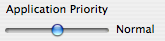

Changing the Processor Priority of a Application
Changing the processor priority will allow you tell your computer which applications should run faster and which applications should run slower; essentially which applications should have first dibs on your processor. In App Stop you can easily change the priority of an application (or applications) using the slider (pictured below) in the Application Manager.
To Change a Application's Processor Priority:
- Open up the Application Manager
- Select the target application(s) in the application list
- Move the priority slider (pictured above) to the left to increase priority, and to the right to decrease
See also
Using CPU Usage Reporting
Force Quitting An Application
Application Manager Shortcuts
Application Actions Topics